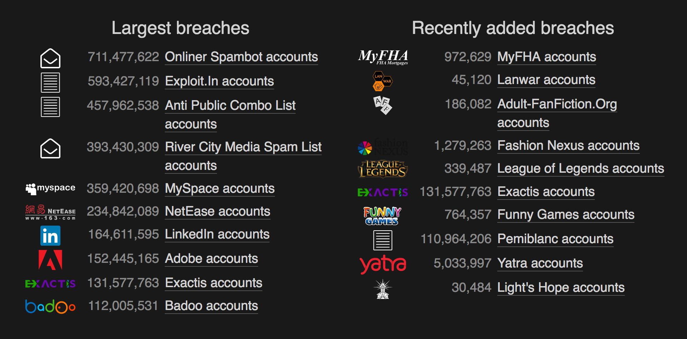

class: center, middle # SECURITY FOCUS ## Broken Authentication ### (AKA Bad Passwords and Login policies) --- ## Cracking -- - Brute-force attack that guesses repeatedly -- - The attack could literally try to login to the application repeatedly (if no checks prevent it) -- - Or guessing are repeated against known hashed passwords from a data breach --- ## Your Data has been Leaked - https://haveibeenpwned.com/  --- ## Fortune Favors the Hackers -- - The deck is currently stacked in the attacker's favor -- - Enterprise software vendors haven't moved to stronger hash types -- - Moore's law has helped attackers tremendously -- - Existing defenses (password policies) have lead to exploitable predictability -- - pass-the-hash attacks, which can make password cracking unnecessary --- ## Strong Passwords -- - The oldies but goodies - At least 1 uppercase character (A-Z) - At least 1 lowercase character (a-z) - At least 1 digit (0-9) - At least 1 special character (punctuation) — do not forget to treat space as special characters too - Not more than 2 identical characters in a row (e.g., 111 not allowed) --- ## Strong Passwords P2 -- - At least 10 characters - At most 128 characters (don't have a small max) -- - Long passwords can increase cracking time from hours to billions of years -- - Check passwords against a list of known weak passwords (don't allow if found) --- ## Password Topology -- - Predictable user behavior is BAD for security - WeakSauce@2018 -> WeakSauce@2018! - Oct0b3r! -> N0v3mb3r! -> D0c3mber! -- - Attackers can reduce cracking time by focusing on known user behaviors and patterns -- - Ban commonly used password topologies -- - Force users to change topologies with each new password (more on these next) --- ## Failed Logins -- - Failed login messages should NOT indicate which part of the login was incorrect -- - Limit the amount of failed logins during a certain time frame --- ## Further Suggestions -- - Two Factor Authentication - Absolutely use it when possible -- - Password Managers - Security comunity is mixed - if they lead to longer, safer, less predictable passwords then they are ok --- ## The End - Now let's all go change our passwords